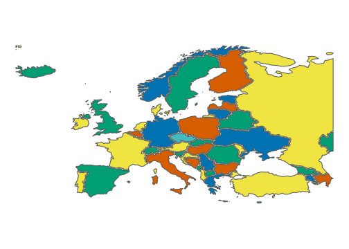

Motivation
I can’t draw by hand but I want to draw map like this with R. https://commons.wikimedia.org/wiki/File:Hand-Drawn_Map_of_Europe.svg
{kind=link}

I can’t draw by hand but I want to draw map like this with R. https://commons.wikimedia.org/wiki/File:Hand-Drawn_Map_of_Europe.svg
# map
library(tidyverse)## ── Attaching packages ─────────────────────────────────────── tidyverse 1.3.2 ──
## ✔ ggplot2 3.3.6 ✔ purrr 0.3.4
## ✔ tibble 3.1.8 ✔ dplyr 1.0.9
## ✔ tidyr 1.2.0 ✔ stringr 1.4.1
## ✔ readr 2.1.2 ✔ forcats 0.5.2
## ── Conflicts ────────────────────────────────────────── tidyverse_conflicts() ──
## ✖ dplyr::filter() masks stats::filter()
## ✖ dplyr::lag() masks stats::lag()library(sf)## Linking to GEOS 3.9.1, GDAL 3.4.3, PROJ 7.2.1; sf_use_s2() is TRUElibrary(rnaturalearth)
sovereignties <- c(
"Albania", "Andorra", "Armenia", "Austria", "Azerbaijan", "Belarus", "Belgium",
"Bosnia and Herzegovina", "Bulgaria", "Croatia", "Cyprus", "Czech Republic",
"Denmark", "Estonia", "Finland", "France", "Georgia", "Germany", "Greece",
"Hungary", "Iceland", "Ireland", "Italy", "Kazakhstan", "Kosovo", "Latvia",
"Liechtenstein", "Lithuania", "Luxembourg", "Macedonia", "Malta", "Moldova",
"Monaco", "Montenegro", "Netherlands", "Norway", "Poland", "Portugal",
"Republic of Serbia", "Romania", "Russia", "San Marino", "Slovakia", "Slovenia",
"Spain", "Sweden", "Switzerland", "Turkey", "Ukraine", "United Kingdom", "Vatican")
europe <- ne_countries(scale = "medium", returnclass = "sf", sovereignty = sovereignties) %>%
select(sovereignt)
# natural map
europe %>% ggplot() +
geom_sf() +
coord_sf(xlim = c(-23, 40), ylim = c(33, 70)) 
# to make negative offset we need to drop Coordinate System and clear the geometries
result <- st_sfc() %>% st_sf()
for (sovereignty in sovereignties) {
inx_dxf <- tempfile("inx_", fileext = c(".dxf"))
europe %>% filter(sovereignt == sovereignty) %>%
st_geometry() %>%
st_write(dsn = inx_dxf, driver ="DXF")
row <- st_read(inx_dxf) %>% select(geometry) %>% st_union() %>% st_sfc() %>%
st_sf() %>% mutate(sovereignt = sovereignty)
result <- result %>% bind_rows(row)
}## Writing layer `inx_72c6efbce0' to data source
## `C:\Users\JACEKP~1\AppData\Local\Temp\Rtmpo5imLg\inx_72c6efbce0.dxf' using driver `DXF'
## Writing 1 features with 0 fields and geometry type Multi Polygon.
## Reading layer `entities' from data source
## `C:\Users\Jacek Pardyak\AppData\Local\Temp\Rtmpo5imLg\inx_72c6efbce0.dxf'
## using driver `DXF'
## Simple feature collection with 1 feature and 6 fields
## Geometry type: POLYGON
## Dimension: XY
## Bounding box: xmin: 19.28066 ymin: 39.65352 xmax: 21.03105 ymax: 42.64795
## CRS: NA
## Writing layer `inx_72c74866e6b' to data source
## `C:\Users\JACEKP~1\AppData\Local\Temp\Rtmpo5imLg\inx_72c74866e6b.dxf' using driver `DXF'
## Writing 1 features with 0 fields and geometry type Multi Polygon.
## Reading layer `entities' from data source
## `C:\Users\Jacek Pardyak\AppData\Local\Temp\Rtmpo5imLg\inx_72c74866e6b.dxf'
## using driver `DXF'
## Simple feature collection with 1 feature and 6 fields
## Geometry type: POLYGON
## Dimension: XY
## Bounding box: xmin: 1.414844 ymin: 42.43447 xmax: 1.740234 ymax: 42.64272
## CRS: NA
## Writing layer `inx_72c23f133e2' to data source
## `C:\Users\JACEKP~1\AppData\Local\Temp\Rtmpo5imLg\inx_72c23f133e2.dxf' using driver `DXF'
## Writing 1 features with 0 fields and geometry type Multi Polygon.
## Reading layer `entities' from data source
## `C:\Users\Jacek Pardyak\AppData\Local\Temp\Rtmpo5imLg\inx_72c23f133e2.dxf'
## using driver `DXF'
## Simple feature collection with 2 features and 6 fields
## Geometry type: POLYGON
## Dimension: XY
## Bounding box: xmin: 43.43945 ymin: 38.86904 xmax: 46.58477 ymax: 41.29097
## CRS: NA
## Writing layer `inx_72c4d41fcc' to data source
## `C:\Users\JACEKP~1\AppData\Local\Temp\Rtmpo5imLg\inx_72c4d41fcc.dxf' using driver `DXF'
## Writing 1 features with 0 fields and geometry type Multi Polygon.
## Reading layer `entities' from data source
## `C:\Users\Jacek Pardyak\AppData\Local\Temp\Rtmpo5imLg\inx_72c4d41fcc.dxf'
## using driver `DXF'
## Simple feature collection with 1 feature and 6 fields
## Geometry type: POLYGON
## Dimension: XY
## Bounding box: xmin: 9.524023 ymin: 46.39971 xmax: 17.14736 ymax: 49.00112
## CRS: NA
## Writing layer `inx_72c48155e1' to data source
## `C:\Users\JACEKP~1\AppData\Local\Temp\Rtmpo5imLg\inx_72c48155e1.dxf' using driver `DXF'
## Writing 1 features with 0 fields and geometry type Multi Polygon.
## Reading layer `entities' from data source
## `C:\Users\Jacek Pardyak\AppData\Local\Temp\Rtmpo5imLg\inx_72c48155e1.dxf'
## using driver `DXF'
## Simple feature collection with 3 features and 6 fields
## Geometry type: POLYGON
## Dimension: XY
## Bounding box: xmin: 44.76826 ymin: 38.39873 xmax: 50.36592 ymax: 41.89097
## CRS: NA
## Writing layer `inx_72cb736cba' to data source
## `C:\Users\JACEKP~1\AppData\Local\Temp\Rtmpo5imLg\inx_72cb736cba.dxf' using driver `DXF'
## Writing 1 features with 0 fields and geometry type Multi Polygon.
## Reading layer `entities' from data source
## `C:\Users\Jacek Pardyak\AppData\Local\Temp\Rtmpo5imLg\inx_72cb736cba.dxf'
## using driver `DXF'
## Simple feature collection with 1 feature and 6 fields
## Geometry type: POLYGON
## Dimension: XY
## Bounding box: xmin: 23.1751 ymin: 51.26504 xmax: 32.71025 ymax: 56.1458
## CRS: NA
## Writing layer `inx_72c7b2b4e0b' to data source
## `C:\Users\JACEKP~1\AppData\Local\Temp\Rtmpo5imLg\inx_72c7b2b4e0b.dxf' using driver `DXF'
## Writing 1 features with 0 fields and geometry type Multi Polygon.
## Reading layer `entities' from data source
## `C:\Users\Jacek Pardyak\AppData\Local\Temp\Rtmpo5imLg\inx_72c7b2b4e0b.dxf'
## using driver `DXF'
## Simple feature collection with 1 feature and 6 fields
## Geometry type: POLYGON
## Dimension: XY
## Bounding box: xmin: 2.524902 ymin: 49.51089 xmax: 6.364453 ymax: 51.49111
## CRS: NA
## Writing layer `inx_72c400a6181' to data source
## `C:\Users\JACEKP~1\AppData\Local\Temp\Rtmpo5imLg\inx_72c400a6181.dxf' using driver `DXF'
## Writing 1 features with 0 fields and geometry type Multi Polygon.
## Reading layer `entities' from data source
## `C:\Users\Jacek Pardyak\AppData\Local\Temp\Rtmpo5imLg\inx_72c400a6181.dxf'
## using driver `DXF'
## Simple feature collection with 1 feature and 6 fields
## Geometry type: POLYGON
## Dimension: XY
## Bounding box: xmin: 15.73662 ymin: 42.55972 xmax: 19.58379 ymax: 45.27656
## CRS: NA
## Writing layer `inx_72c3ee91fbe' to data source
## `C:\Users\JACEKP~1\AppData\Local\Temp\Rtmpo5imLg\inx_72c3ee91fbe.dxf' using driver `DXF'
## Writing 1 features with 0 fields and geometry type Multi Polygon.
## Reading layer `entities' from data source
## `C:\Users\Jacek Pardyak\AppData\Local\Temp\Rtmpo5imLg\inx_72c3ee91fbe.dxf'
## using driver `DXF'
## Simple feature collection with 1 feature and 6 fields
## Geometry type: POLYGON
## Dimension: XY
## Bounding box: xmin: 22.34404 ymin: 41.24355 xmax: 28.58535 ymax: 44.23779
## CRS: NA
## Writing layer `inx_72c647a5607' to data source
## `C:\Users\JACEKP~1\AppData\Local\Temp\Rtmpo5imLg\inx_72c647a5607.dxf' using driver `DXF'
## Writing 1 features with 0 fields and geometry type Multi Polygon.
## Reading layer `entities' from data source
## `C:\Users\Jacek Pardyak\AppData\Local\Temp\Rtmpo5imLg\inx_72c647a5607.dxf'
## using driver `DXF'
## Simple feature collection with 13 features and 6 fields
## Geometry type: POLYGON
## Dimension: XY
## Bounding box: xmin: 13.51719 ymin: 42.43291 xmax: 19.40098 ymax: 46.53462
## CRS: NA
## Writing layer `inx_72ccbf68a7' to data source
## `C:\Users\JACEKP~1\AppData\Local\Temp\Rtmpo5imLg\inx_72ccbf68a7.dxf' using driver `DXF'
## Writing 1 features with 0 fields and geometry type Multi Polygon.
## Reading layer `entities' from data source
## `C:\Users\Jacek Pardyak\AppData\Local\Temp\Rtmpo5imLg\inx_72ccbf68a7.dxf'
## using driver `DXF'
## Simple feature collection with 1 feature and 6 fields
## Geometry type: POLYGON
## Dimension: XY
## Bounding box: xmin: 32.30098 ymin: 34.56958 xmax: 34.0502 ymax: 35.18267
## CRS: NA
## Writing layer `inx_72c6b12110c' to data source
## `C:\Users\JACEKP~1\AppData\Local\Temp\Rtmpo5imLg\inx_72c6b12110c.dxf' using driver `DXF'
## Writing 1 features with 0 fields and geometry type Multi Polygon.
## Reading layer `entities' from data source
## `C:\Users\Jacek Pardyak\AppData\Local\Temp\Rtmpo5imLg\inx_72c6b12110c.dxf'
## using driver `DXF'
## Simple feature collection with 1 feature and 6 fields
## Geometry type: POLYGON
## Dimension: XY
## Bounding box: xmin: 12.08975 ymin: 48.57622 xmax: 18.83223 ymax: 51.03779
## CRS: NA
## Writing layer `inx_72c1f943e2b' to data source
## `C:\Users\JACEKP~1\AppData\Local\Temp\Rtmpo5imLg\inx_72c1f943e2b.dxf' using driver `DXF'
## Writing 3 features with 0 fields and geometry type Multi Polygon.
## Reading layer `entities' from data source
## `C:\Users\Jacek Pardyak\AppData\Local\Temp\Rtmpo5imLg\inx_72c1f943e2b.dxf'
## using driver `DXF'
## Simple feature collection with 34 features and 6 fields
## Geometry type: POLYGON
## Dimension: XY
## Bounding box: xmin: -72.81807 ymin: 54.62886 xmax: 15.13711 ymax: 83.59961
## CRS: NA
## Writing layer `inx_72c4d0330b0' to data source
## `C:\Users\JACEKP~1\AppData\Local\Temp\Rtmpo5imLg\inx_72c4d0330b0.dxf' using driver `DXF'
## Writing 1 features with 0 fields and geometry type Multi Polygon.
## Reading layer `entities' from data source
## `C:\Users\Jacek Pardyak\AppData\Local\Temp\Rtmpo5imLg\inx_72c4d0330b0.dxf'
## using driver `DXF'
## Simple feature collection with 4 features and 6 fields
## Geometry type: POLYGON
## Dimension: XY
## Bounding box: xmin: 21.85449 ymin: 57.52549 xmax: 28.15107 ymax: 59.63901
## CRS: NA
## Writing layer `inx_72c5a407a05' to data source
## `C:\Users\JACEKP~1\AppData\Local\Temp\Rtmpo5imLg\inx_72c5a407a05.dxf' using driver `DXF'
## Writing 2 features with 0 fields and geometry type Multi Polygon.
## Reading layer `entities' from data source
## `C:\Users\Jacek Pardyak\AppData\Local\Temp\Rtmpo5imLg\inx_72c5a407a05.dxf'
## using driver `DXF'
## Simple feature collection with 11 features and 6 fields
## Geometry type: POLYGON
## Dimension: XY
## Bounding box: xmin: 19.51904 ymin: 59.81602 xmax: 31.53652 ymax: 70.06484
## CRS: NA
## Writing layer `inx_72c25137c36' to data source
## `C:\Users\JACEKP~1\AppData\Local\Temp\Rtmpo5imLg\inx_72c25137c36.dxf' using driver `DXF'
## Writing 8 features with 0 fields and geometry type Multi Polygon.
## Reading layer `entities' from data source
## `C:\Users\Jacek Pardyak\AppData\Local\Temp\Rtmpo5imLg\inx_72c25137c36.dxf'
## using driver `DXF'
## Simple feature collection with 46 features and 6 fields
## Geometry type: POLYGON
## Dimension: XY
## Bounding box: xmin: -178.1944 ymin: -49.70986 xmax: 168.1391 ymax: 51.09712
## CRS: NA
## Writing layer `inx_72c57e63a31' to data source
## `C:\Users\JACEKP~1\AppData\Local\Temp\Rtmpo5imLg\inx_72c57e63a31.dxf' using driver `DXF'
## Writing 1 features with 0 fields and geometry type Multi Polygon.
## Reading layer `entities' from data source
## `C:\Users\Jacek Pardyak\AppData\Local\Temp\Rtmpo5imLg\inx_72c57e63a31.dxf'
## using driver `DXF'
## Simple feature collection with 1 feature and 6 fields
## Geometry type: POLYGON
## Dimension: XY
## Bounding box: xmin: 39.97832 ymin: 41.07021 xmax: 46.67256 ymax: 43.56978
## CRS: NA
## Writing layer `inx_72c6295307' to data source
## `C:\Users\JACEKP~1\AppData\Local\Temp\Rtmpo5imLg\inx_72c6295307.dxf' using driver `DXF'
## Writing 1 features with 0 fields and geometry type Multi Polygon.
## Reading layer `entities' from data source
## `C:\Users\Jacek Pardyak\AppData\Local\Temp\Rtmpo5imLg\inx_72c6295307.dxf'
## using driver `DXF'
## Simple feature collection with 6 features and 6 fields
## Geometry type: POLYGON
## Dimension: XY
## Bounding box: xmin: 5.85752 ymin: 47.27881 xmax: 15.0166 ymax: 55.05874
## CRS: NA
## Writing layer `inx_72c56841809' to data source
## `C:\Users\JACEKP~1\AppData\Local\Temp\Rtmpo5imLg\inx_72c56841809.dxf' using driver `DXF'
## Writing 1 features with 0 fields and geometry type Multi Polygon.
## Reading layer `entities' from data source
## `C:\Users\Jacek Pardyak\AppData\Local\Temp\Rtmpo5imLg\inx_72c56841809.dxf'
## using driver `DXF'
## Simple feature collection with 40 features and 6 fields
## Geometry type: POLYGON
## Dimension: XY
## Bounding box: xmin: 19.64648 ymin: 34.93447 xmax: 28.23184 ymax: 41.7438
## CRS: NA
## Writing layer `inx_72c28982cfa' to data source
## `C:\Users\JACEKP~1\AppData\Local\Temp\Rtmpo5imLg\inx_72c28982cfa.dxf' using driver `DXF'
## Writing 1 features with 0 fields and geometry type Multi Polygon.
## Reading layer `entities' from data source
## `C:\Users\Jacek Pardyak\AppData\Local\Temp\Rtmpo5imLg\inx_72c28982cfa.dxf'
## using driver `DXF'
## Simple feature collection with 1 feature and 6 fields
## Geometry type: POLYGON
## Dimension: XY
## Bounding box: xmin: 16.09307 ymin: 45.75303 xmax: 22.87666 ymax: 48.55347
## CRS: NA
## Writing layer `inx_72c2fc85aaf' to data source
## `C:\Users\JACEKP~1\AppData\Local\Temp\Rtmpo5imLg\inx_72c2fc85aaf.dxf' using driver `DXF'
## Writing 1 features with 0 fields and geometry type Multi Polygon.
## Reading layer `entities' from data source
## `C:\Users\Jacek Pardyak\AppData\Local\Temp\Rtmpo5imLg\inx_72c2fc85aaf.dxf'
## using driver `DXF'
## Simple feature collection with 1 feature and 6 fields
## Geometry type: POLYGON
## Dimension: XY
## Bounding box: xmin: -24.47568 ymin: 63.40669 xmax: -13.5561 ymax: 66.52607
## CRS: NA
## Writing layer `inx_72c2d5f1fd2' to data source
## `C:\Users\JACEKP~1\AppData\Local\Temp\Rtmpo5imLg\inx_72c2d5f1fd2.dxf' using driver `DXF'
## Writing 1 features with 0 fields and geometry type Multi Polygon.
## Reading layer `entities' from data source
## `C:\Users\Jacek Pardyak\AppData\Local\Temp\Rtmpo5imLg\inx_72c2d5f1fd2.dxf'
## using driver `DXF'
## Simple feature collection with 2 features and 6 fields
## Geometry type: POLYGON
## Dimension: XY
## Bounding box: xmin: -10.39023 ymin: 51.47373 xmax: -6.027393 ymax: 55.36582
## CRS: NA
## Writing layer `inx_72c542628aa' to data source
## `C:\Users\JACEKP~1\AppData\Local\Temp\Rtmpo5imLg\inx_72c542628aa.dxf' using driver `DXF'
## Writing 1 features with 0 fields and geometry type Multi Polygon.
## Reading layer `entities' from data source
## `C:\Users\Jacek Pardyak\AppData\Local\Temp\Rtmpo5imLg\inx_72c542628aa.dxf'
## using driver `DXF'
## Simple feature collection with 8 features and 6 fields
## Geometry type: POLYGON
## Dimension: XY
## Bounding box: xmin: 6.627734 ymin: 36.68784 xmax: 18.48584 ymax: 47.08213
## CRS: NA
## Writing layer `inx_72c2e111e09' to data source
## `C:\Users\JACEKP~1\AppData\Local\Temp\Rtmpo5imLg\inx_72c2e111e09.dxf' using driver `DXF'
## Writing 1 features with 0 fields and geometry type Multi Polygon.
## Reading layer `entities' from data source
## `C:\Users\Jacek Pardyak\AppData\Local\Temp\Rtmpo5imLg\inx_72c2e111e09.dxf'
## using driver `DXF'
## Simple feature collection with 4 features and 6 fields
## Geometry type: POLYGON
## Dimension: XY
## Bounding box: xmin: 46.60918 ymin: 40.60864 xmax: 87.32285 ymax: 55.3896
## CRS: NA
## Writing layer `inx_72c7c277cd4' to data source
## `C:\Users\JACEKP~1\AppData\Local\Temp\Rtmpo5imLg\inx_72c7c277cd4.dxf' using driver `DXF'
## Writing 1 features with 0 fields and geometry type Multi Polygon.
## Reading layer `entities' from data source
## `C:\Users\Jacek Pardyak\AppData\Local\Temp\Rtmpo5imLg\inx_72c7c277cd4.dxf'
## using driver `DXF'
## Simple feature collection with 1 feature and 6 fields
## Geometry type: POLYGON
## Dimension: XY
## Bounding box: xmin: 20.02949 ymin: 41.85381 xmax: 21.75293 ymax: 43.26108
## CRS: NA
## Writing layer `inx_72c4ab242cc' to data source
## `C:\Users\JACEKP~1\AppData\Local\Temp\Rtmpo5imLg\inx_72c4ab242cc.dxf' using driver `DXF'
## Writing 1 features with 0 fields and geometry type Multi Polygon.
## Reading layer `entities' from data source
## `C:\Users\Jacek Pardyak\AppData\Local\Temp\Rtmpo5imLg\inx_72c4ab242cc.dxf'
## using driver `DXF'
## Simple feature collection with 1 feature and 6 fields
## Geometry type: POLYGON
## Dimension: XY
## Bounding box: xmin: 21.01494 ymin: 55.66753 xmax: 28.20205 ymax: 58.06343
## CRS: NA
## Writing layer `inx_72c4046273' to data source
## `C:\Users\JACEKP~1\AppData\Local\Temp\Rtmpo5imLg\inx_72c4046273.dxf' using driver `DXF'
## Writing 1 features with 0 fields and geometry type Multi Polygon.
## Reading layer `entities' from data source
## `C:\Users\Jacek Pardyak\AppData\Local\Temp\Rtmpo5imLg\inx_72c4046273.dxf'
## using driver `DXF'
## Simple feature collection with 1 feature and 6 fields
## Geometry type: POLYGON
## Dimension: XY
## Bounding box: xmin: 9.479492 ymin: 47.05737 xmax: 9.610547 ymax: 47.27075
## CRS: NA
## Writing layer `inx_72c5e523f46' to data source
## `C:\Users\JACEKP~1\AppData\Local\Temp\Rtmpo5imLg\inx_72c5e523f46.dxf' using driver `DXF'
## Writing 1 features with 0 fields and geometry type Multi Polygon.
## Reading layer `entities' from data source
## `C:\Users\Jacek Pardyak\AppData\Local\Temp\Rtmpo5imLg\inx_72c5e523f46.dxf'
## using driver `DXF'
## Simple feature collection with 2 features and 6 fields
## Geometry type: POLYGON
## Dimension: XY
## Bounding box: xmin: 20.8998 ymin: 53.89297 xmax: 26.77568 ymax: 56.41118
## CRS: NA
## Writing layer `inx_72c25733ca6' to data source
## `C:\Users\JACEKP~1\AppData\Local\Temp\Rtmpo5imLg\inx_72c25733ca6.dxf' using driver `DXF'
## Writing 1 features with 0 fields and geometry type Multi Polygon.
## Reading layer `entities' from data source
## `C:\Users\Jacek Pardyak\AppData\Local\Temp\Rtmpo5imLg\inx_72c25733ca6.dxf'
## using driver `DXF'
## Simple feature collection with 1 feature and 6 fields
## Geometry type: POLYGON
## Dimension: XY
## Bounding box: xmin: 5.725 ymin: 49.44546 xmax: 6.49375 ymax: 50.16719
## CRS: NA
## Writing layer `inx_72c27847d21' to data source
## `C:\Users\JACEKP~1\AppData\Local\Temp\Rtmpo5imLg\inx_72c27847d21.dxf' using driver `DXF'
## Writing 1 features with 0 fields and geometry type Multi Polygon.
## Reading layer `entities' from data source
## `C:\Users\Jacek Pardyak\AppData\Local\Temp\Rtmpo5imLg\inx_72c27847d21.dxf'
## using driver `DXF'
## Simple feature collection with 1 feature and 6 fields
## Geometry type: POLYGON
## Dimension: XY
## Bounding box: xmin: 20.44863 ymin: 40.8499 xmax: 23.00566 ymax: 42.35815
## CRS: NA
## Writing layer `inx_72c3c11d03' to data source
## `C:\Users\JACEKP~1\AppData\Local\Temp\Rtmpo5imLg\inx_72c3c11d03.dxf' using driver `DXF'
## Writing 1 features with 0 fields and geometry type Multi Polygon.
## Reading layer `entities' from data source
## `C:\Users\Jacek Pardyak\AppData\Local\Temp\Rtmpo5imLg\inx_72c3c11d03.dxf'
## using driver `DXF'
## Simple feature collection with 2 features and 6 fields
## Geometry type: POLYGON
## Dimension: XY
## Bounding box: xmin: 14.18037 ymin: 35.82021 xmax: 14.56621 ymax: 36.07578
## CRS: NA
## Writing layer `inx_72c55124a4a' to data source
## `C:\Users\JACEKP~1\AppData\Local\Temp\Rtmpo5imLg\inx_72c55124a4a.dxf' using driver `DXF'
## Writing 1 features with 0 fields and geometry type Multi Polygon.
## Reading layer `entities' from data source
## `C:\Users\Jacek Pardyak\AppData\Local\Temp\Rtmpo5imLg\inx_72c55124a4a.dxf'
## using driver `DXF'
## Simple feature collection with 1 feature and 6 fields
## Geometry type: POLYGON
## Dimension: XY
## Bounding box: xmin: 26.61895 ymin: 45.45044 xmax: 30.13105 ymax: 48.47773
## CRS: NA
## Writing layer `inx_72c3e216d7e' to data source
## `C:\Users\JACEKP~1\AppData\Local\Temp\Rtmpo5imLg\inx_72c3e216d7e.dxf' using driver `DXF'
## Writing 1 features with 0 fields and geometry type Multi Polygon.
## Reading layer `entities' from data source
## `C:\Users\Jacek Pardyak\AppData\Local\Temp\Rtmpo5imLg\inx_72c3e216d7e.dxf'
## using driver `DXF'
## Simple feature collection with 1 feature and 6 fields
## Geometry type: POLYGON
## Dimension: XY
## Bounding box: xmin: 7.377734 ymin: 43.73174 xmax: 7.438672 ymax: 43.7709
## CRS: NA
## Writing layer `inx_72c4aef71f5' to data source
## `C:\Users\JACEKP~1\AppData\Local\Temp\Rtmpo5imLg\inx_72c4aef71f5.dxf' using driver `DXF'
## Writing 1 features with 0 fields and geometry type Multi Polygon.
## Reading layer `entities' from data source
## `C:\Users\Jacek Pardyak\AppData\Local\Temp\Rtmpo5imLg\inx_72c4aef71f5.dxf'
## using driver `DXF'
## Simple feature collection with 1 feature and 6 fields
## Geometry type: POLYGON
## Dimension: XY
## Bounding box: xmin: 18.43633 ymin: 41.86909 xmax: 20.34766 ymax: 43.54233
## CRS: NA
## Writing layer `inx_72c7c44718c' to data source
## `C:\Users\JACEKP~1\AppData\Local\Temp\Rtmpo5imLg\inx_72c7c44718c.dxf' using driver `DXF'
## Writing 4 features with 0 fields and geometry type Multi Polygon.
## Reading layer `entities' from data source
## `C:\Users\Jacek Pardyak\AppData\Local\Temp\Rtmpo5imLg\inx_72c7c44718c.dxf'
## using driver `DXF'
## Simple feature collection with 15 features and 6 fields
## Geometry type: POLYGON
## Dimension: XY
## Bounding box: xmin: -70.06611 ymin: 12.03208 xmax: 7.197266 ymax: 53.62549
## CRS: NA
## Writing layer `inx_72c336d66e2' to data source
## `C:\Users\JACEKP~1\AppData\Local\Temp\Rtmpo5imLg\inx_72c336d66e2.dxf' using driver `DXF'
## Writing 1 features with 0 fields and geometry type Multi Polygon.
## Reading layer `entities' from data source
## `C:\Users\Jacek Pardyak\AppData\Local\Temp\Rtmpo5imLg\inx_72c336d66e2.dxf'
## using driver `DXF'
## Simple feature collection with 32 features and 6 fields
## Geometry type: POLYGON
## Dimension: XY
## Bounding box: xmin: -9.098877 ymin: 58.02095 xmax: 33.6293 ymax: 80.47783
## CRS: NA
## Writing layer `inx_72c29296289' to data source
## `C:\Users\JACEKP~1\AppData\Local\Temp\Rtmpo5imLg\inx_72c29296289.dxf' using driver `DXF'
## Writing 1 features with 0 fields and geometry type Multi Polygon.
## Reading layer `entities' from data source
## `C:\Users\Jacek Pardyak\AppData\Local\Temp\Rtmpo5imLg\inx_72c29296289.dxf'
## using driver `DXF'
## Simple feature collection with 1 feature and 6 fields
## Geometry type: POLYGON
## Dimension: XY
## Bounding box: xmin: 14.12861 ymin: 49.02075 xmax: 24.10576 ymax: 54.83818
## CRS: NA
## Writing layer `inx_72c30b062de' to data source
## `C:\Users\JACEKP~1\AppData\Local\Temp\Rtmpo5imLg\inx_72c30b062de.dxf' using driver `DXF'
## Writing 1 features with 0 fields and geometry type Multi Polygon.
## Reading layer `entities' from data source
## `C:\Users\Jacek Pardyak\AppData\Local\Temp\Rtmpo5imLg\inx_72c30b062de.dxf'
## using driver `DXF'
## Simple feature collection with 9 features and 6 fields
## Geometry type: POLYGON
## Dimension: XY
## Bounding box: xmin: -31.28296 ymin: 32.64829 xmax: -6.2125 ymax: 42.1374
## CRS: NA
## Writing layer `inx_72c50372b57' to data source
## `C:\Users\JACEKP~1\AppData\Local\Temp\Rtmpo5imLg\inx_72c50372b57.dxf' using driver `DXF'
## Writing 1 features with 0 fields and geometry type Multi Polygon.
## Reading layer `entities' from data source
## `C:\Users\Jacek Pardyak\AppData\Local\Temp\Rtmpo5imLg\inx_72c50372b57.dxf'
## using driver `DXF'
## Simple feature collection with 1 feature and 6 fields
## Geometry type: POLYGON
## Dimension: XY
## Bounding box: xmin: 18.83906 ymin: 42.24214 xmax: 22.97686 ymax: 46.16919
## CRS: NA
## Writing layer `inx_72c42631f8c' to data source
## `C:\Users\JACEKP~1\AppData\Local\Temp\Rtmpo5imLg\inx_72c42631f8c.dxf' using driver `DXF'
## Writing 1 features with 0 fields and geometry type Multi Polygon.
## Reading layer `entities' from data source
## `C:\Users\Jacek Pardyak\AppData\Local\Temp\Rtmpo5imLg\inx_72c42631f8c.dxf'
## using driver `DXF'
## Simple feature collection with 1 feature and 6 fields
## Geometry type: POLYGON
## Dimension: XY
## Bounding box: xmin: 20.2418 ymin: 43.6708 xmax: 29.70586 ymax: 48.26348
## CRS: NA
## Writing layer `inx_72c5089749' to data source
## `C:\Users\JACEKP~1\AppData\Local\Temp\Rtmpo5imLg\inx_72c5089749.dxf' using driver `DXF'
## Writing 1 features with 0 fields and geometry type Multi Polygon.
## Reading layer `entities' from data source
## `C:\Users\Jacek Pardyak\AppData\Local\Temp\Rtmpo5imLg\inx_72c5089749.dxf'
## using driver `DXF'
## Simple feature collection with 100 features and 6 fields
## Geometry type: POLYGON
## Dimension: XY
## Bounding box: xmin: -180 ymin: 41.19927 xmax: 180 ymax: 81.8542
## CRS: NA
## Writing layer `inx_72c33a9c65' to data source
## `C:\Users\JACEKP~1\AppData\Local\Temp\Rtmpo5imLg\inx_72c33a9c65.dxf' using driver `DXF'
## Writing 1 features with 0 fields and geometry type Multi Polygon.
## Reading layer `entities' from data source
## `C:\Users\Jacek Pardyak\AppData\Local\Temp\Rtmpo5imLg\inx_72c33a9c65.dxf'
## using driver `DXF'
## Simple feature collection with 1 feature and 6 fields
## Geometry type: POLYGON
## Dimension: XY
## Bounding box: xmin: 12.39688 ymin: 43.89409 xmax: 12.51465 ymax: 43.98975
## CRS: NA
## Writing layer `inx_72c5a8983f' to data source
## `C:\Users\JACEKP~1\AppData\Local\Temp\Rtmpo5imLg\inx_72c5a8983f.dxf' using driver `DXF'
## Writing 1 features with 0 fields and geometry type Multi Polygon.
## Reading layer `entities' from data source
## `C:\Users\Jacek Pardyak\AppData\Local\Temp\Rtmpo5imLg\inx_72c5a8983f.dxf'
## using driver `DXF'
## Simple feature collection with 1 feature and 6 fields
## Geometry type: POLYGON
## Dimension: XY
## Bounding box: xmin: 16.8627 ymin: 47.76343 xmax: 22.53867 ymax: 49.59771
## CRS: NA
## Writing layer `inx_72c255725fe' to data source
## `C:\Users\JACEKP~1\AppData\Local\Temp\Rtmpo5imLg\inx_72c255725fe.dxf' using driver `DXF'
## Writing 1 features with 0 fields and geometry type Multi Polygon.
## Reading layer `entities' from data source
## `C:\Users\Jacek Pardyak\AppData\Local\Temp\Rtmpo5imLg\inx_72c255725fe.dxf'
## using driver `DXF'
## Simple feature collection with 1 feature and 6 fields
## Geometry type: POLYGON
## Dimension: XY
## Bounding box: xmin: 13.37822 ymin: 45.42837 xmax: 16.51621 ymax: 46.86328
## CRS: NA
## Writing layer `inx_72c6bc04812' to data source
## `C:\Users\JACEKP~1\AppData\Local\Temp\Rtmpo5imLg\inx_72c6bc04812.dxf' using driver `DXF'
## Writing 1 features with 0 fields and geometry type Multi Polygon.
## Reading layer `entities' from data source
## `C:\Users\Jacek Pardyak\AppData\Local\Temp\Rtmpo5imLg\inx_72c6bc04812.dxf'
## using driver `DXF'
## Simple feature collection with 12 features and 6 fields
## Geometry type: POLYGON
## Dimension: XY
## Bounding box: xmin: -18.16055 ymin: 27.64639 xmax: 4.32207 ymax: 43.76455
## CRS: NA
## Writing layer `inx_72c8605289' to data source
## `C:\Users\JACEKP~1\AppData\Local\Temp\Rtmpo5imLg\inx_72c8605289.dxf' using driver `DXF'
## Writing 1 features with 0 fields and geometry type Multi Polygon.
## Reading layer `entities' from data source
## `C:\Users\Jacek Pardyak\AppData\Local\Temp\Rtmpo5imLg\inx_72c8605289.dxf'
## using driver `DXF'
## Simple feature collection with 6 features and 6 fields
## Geometry type: POLYGON
## Dimension: XY
## Bounding box: xmin: 11.14717 ymin: 55.34639 xmax: 24.15547 ymax: 69.03687
## CRS: NA
## Writing layer `inx_72c3cec4932' to data source
## `C:\Users\JACEKP~1\AppData\Local\Temp\Rtmpo5imLg\inx_72c3cec4932.dxf' using driver `DXF'
## Writing 1 features with 0 fields and geometry type Multi Polygon.
## Reading layer `entities' from data source
## `C:\Users\Jacek Pardyak\AppData\Local\Temp\Rtmpo5imLg\inx_72c3cec4932.dxf'
## using driver `DXF'
## Simple feature collection with 1 feature and 6 fields
## Geometry type: POLYGON
## Dimension: XY
## Bounding box: xmin: 5.97002 ymin: 45.83003 xmax: 10.45459 ymax: 47.77563
## CRS: NA
## Writing layer `inx_72c1c91679f' to data source
## `C:\Users\JACEKP~1\AppData\Local\Temp\Rtmpo5imLg\inx_72c1c91679f.dxf' using driver `DXF'
## Writing 1 features with 0 fields and geometry type Multi Polygon.
## Reading layer `entities' from data source
## `C:\Users\Jacek Pardyak\AppData\Local\Temp\Rtmpo5imLg\inx_72c1c91679f.dxf'
## using driver `DXF'
## Simple feature collection with 3 features and 6 fields
## Geometry type: POLYGON
## Dimension: XY
## Bounding box: xmin: 25.66895 ymin: 35.83145 xmax: 44.81719 ymax: 42.09326
## CRS: NA
## Writing layer `inx_72c56534a8d' to data source
## `C:\Users\JACEKP~1\AppData\Local\Temp\Rtmpo5imLg\inx_72c56534a8d.dxf' using driver `DXF'
## Writing 1 features with 0 fields and geometry type Multi Polygon.
## Reading layer `entities' from data source
## `C:\Users\Jacek Pardyak\AppData\Local\Temp\Rtmpo5imLg\inx_72c56534a8d.dxf'
## using driver `DXF'
## Simple feature collection with 2 features and 6 fields
## Geometry type: POLYGON
## Dimension: XY
## Bounding box: xmin: 22.13184 ymin: 44.3876 xmax: 40.12832 ymax: 52.35356
## CRS: NA
## Writing layer `inx_72c477e3d3d' to data source
## `C:\Users\JACEKP~1\AppData\Local\Temp\Rtmpo5imLg\inx_72c477e3d3d.dxf' using driver `DXF'
## Writing 15 features with 0 fields and geometry type Multi Polygon.
## Reading layer `entities' from data source
## `C:\Users\Jacek Pardyak\AppData\Local\Temp\Rtmpo5imLg\inx_72c477e3d3d.dxf'
## using driver `DXF'
## Simple feature collection with 50 features and 6 fields
## Geometry type: POLYGON
## Dimension: XY
## Bounding box: xmin: -128.3502 ymin: -58.49229 xmax: 72.49854 ymax: 60.83188
## CRS: NA
## Writing layer `inx_72c3e5812b3' to data source
## `C:\Users\JACEKP~1\AppData\Local\Temp\Rtmpo5imLg\inx_72c3e5812b3.dxf' using driver `DXF'
## Writing 1 features with 0 fields and geometry type Multi Polygon.
## Reading layer `entities' from data source
## `C:\Users\Jacek Pardyak\AppData\Local\Temp\Rtmpo5imLg\inx_72c3e5812b3.dxf'
## using driver `DXF'
## Simple feature collection with 1 feature and 6 fields
## Geometry type: POLYGON
## Dimension: XY
## Bounding box: xmin: 12.42754 ymin: 41.89756 xmax: 12.43916 ymax: 41.9062
## CRS: NArow <- result %>% filter(sovereignt %in% c("Kosovo", "Republic of Serbia")) %>% st_union() %>%
st_cast("LINESTRING") %>% nth(1) %>%
st_polygonize() %>% first() %>% st_sfc() %>% st_sf() %>% mutate(sovereignt = "Republic of Serbia")
result <- result %>% filter(!sovereignt %in% c("Kosovo", "Republic of Serbia")) %>% bind_rows(row)
# we crop the map
row <- matrix(c(-23, 33,
-23, 71,
50, 71,
50, 33,
-23, 33),ncol=2, byrow=TRUE) %>%
list() %>% st_polygon() %>% st_sfc() %>% st_sf()
result <- result %>%
st_intersection(row)## Warning: attribute variables are assumed to be spatially constant throughout all
## geometriesresult %>%
ggplot() +
geom_sf() 
# try buffer
result <- result %>% mutate(geometry = st_buffer(geometry, dist = -.1)) %>%
mutate(geometry = st_simplify(geometry)) %>%
mutate(area = st_area(geometry)) %>%
filter(area > 0.1)
result %>% ggplot() +
geom_sf() 
# network
sovereignties## [1] "Albania" "Andorra" "Armenia"
## [4] "Austria" "Azerbaijan" "Belarus"
## [7] "Belgium" "Bosnia and Herzegovina" "Bulgaria"
## [10] "Croatia" "Cyprus" "Czech Republic"
## [13] "Denmark" "Estonia" "Finland"
## [16] "France" "Georgia" "Germany"
## [19] "Greece" "Hungary" "Iceland"
## [22] "Ireland" "Italy" "Kazakhstan"
## [25] "Kosovo" "Latvia" "Liechtenstein"
## [28] "Lithuania" "Luxembourg" "Macedonia"
## [31] "Malta" "Moldova" "Monaco"
## [34] "Montenegro" "Netherlands" "Norway"
## [37] "Poland" "Portugal" "Republic of Serbia"
## [40] "Romania" "Russia" "San Marino"
## [43] "Slovakia" "Slovenia" "Spain"
## [46] "Sweden" "Switzerland" "Turkey"
## [49] "Ukraine" "United Kingdom" "Vatican"library(igraph)##
## Attaching package: 'igraph'
##
## The following objects are masked from 'package:dplyr':
##
## as_data_frame, groups, union
##
## The following objects are masked from 'package:purrr':
##
## compose, simplify
##
## The following object is masked from 'package:tidyr':
##
## crossing
##
## The following object is masked from 'package:tibble':
##
## as_data_frame
##
## The following objects are masked from 'package:stats':
##
## decompose, spectrum
##
## The following object is masked from 'package:base':
##
## unionlibrary(visNetwork)
json <- jsonlite::fromJSON("neighbours.json")
json## country
## 1 Albania
## 2 Andorra
## 3 Armenia
## 4 Austria
## 5 Azerbaijan
## 6 Belarus
## 7 Belgium
## 8 Bosnia and Herzegovina
## 9 Bulgaria
## 10 Croatia
## 11 Cyprus
## 12 Czech Republic
## 13 Denmark
## 14 Estonia
## 15 Finland
## 16 France
## 17 Georgia
## 18 Germany
## 19 Greece
## 20 Hungary
## 21 Iceland
## 22 Ireland
## 23 Italy
## 24 Kazakhstan
## 25 Latvia
## 26 Liechtenstein
## 27 Lithuania
## 28 Macedonia
## 29 Moldova
## 30 Montenegro
## 31 Netherlands
## 32 Norway
## 33 Poland
## 34 Portugal
## 35 Republic of Serbia
## 36 Romania
## 37 Russia
## 38 Slovakia
## neighbours
## 1 Greece, Italy, Montenegro, Macedonia, Republic of Serbia, NA, M, NA, L, L
## 2 France, Spain, L, L
## 3 Azerbaijan, Georgia, Turkey, L, L, L
## 4 Czech Republic, Germany, Hungary, Italy, Liechtenstein, Slovakia, Slovenia, Switzerland, L, L, L, L, L, L, L, L
## 5 Georgia, Kazakhstan, Russia, Turkey, L, M, NA, L
## 6 Latvia, Lithuania, Poland, Russia, Ukraine, L, L, L, L, L
## 7 France, Germany, Luxembourg, Netherlands, United Kingdom, NA, L, L, NA, M
## 8 Croatia, Montenegro, Republic of Serbia, NA, L, L
## 9 Greece, Macedonia, Romania, Republic of Serbia, Turkey, Russia, Ukraine, L, L, NA, L, NA, M, M
## 10 Hungary, Italy, Montenegro, Republic of Serbia, Slovenia, L, M, NA, L, NA
## 11 Greece, Turkey, M, M
## 12 Germany, Poland, Slovakia, L, L, L
## 13 Germany, Iceland, Norway, Poland, Sweden, United Kingdom, NA, M, M, M, M, M
## 14 Finland, Latvia, Russia, Sweden, M, NA, NA, M
## 15 Norway, Russia, Sweden, L, NA, NA
## 16 Germany, Italy, Luxembourg, Monaco, Spain, Switzerland, United Kingdom, L, NA, L, NA, NA, L, M
## 17 Russia, Turkey
## 18 Luxembourg, Netherlands, Poland, Sweden, Switzerland, United Kingdom, L, NA, NA, M, L, M
## 19 Italy, Macedonia, Turkey, M, L, NA
## 20 Romania, Republic of Serbia, Slovakia, Slovenia, Ukraine, L, L, L, L, L
## 21 Norway, M
## 22 United Kingdom
## 23 Malta, Montenegro, San Marino, Slovenia, Spain, Switzerland, Vatican, M, M, L, NA, M, L, L
## 24 Russia
## 25 Lithuania, Russia, Sweden, NA, L, M
## 26 Switzerland, L
## 27 Poland, Russia, Sweden, L, NA, M
## 28 Republic of Serbia, L
## 29 Romania, Ukraine, L, L
## 30 Republic of Serbia, L
## 31 United Kingdom, M
## 32 Russia, Sweden, United Kingdom, NA, NA, M
## 33 Russia, Slovakia, Sweden, Ukraine, NA, L, M, L
## 34 Spain
## 35 Romania, L
## 36 Russia, Ukraine, M, NA
## 37 Sweden, Ukraine, M, NA
## 38 Ukraine, Lcountries <- json %>% select(country) %>% pull()
neighbours <- tibble()
for (cnt in countries) {
row <- json %>% filter(country == cnt) %>% select(neighbours) %>% pull() %>%
first() %>% mutate(country = cnt)
neighbours <- neighbours %>% bind_rows(row)
}
d <- neighbours %>% select(country, neighbour)
vertices <- union(neighbours %>% select(country) %>% distinct() %>% pull(),
neighbours %>% select(neighbour) %>% distinct() %>% pull())
igraph_network <- graph_from_data_frame(d = d, vertices = vertices, directed = F)
plot(igraph_network)
data <- toVisNetworkData(igraph_network)
visNetwork(nodes = data$nodes, edges = data$edges, height = "500px")data$nodes <- greedy_vertex_coloring(
igraph_network,
heuristic = c("colored_neighbors")) %>%
tibble(label = names(.),
col_id = .) %>%
left_join(tibble(col_id = c(1:5),
color = c("#f0e442ff", "#009e73ff", "#d55e00ff", "#0072b2ff", "#44b9bfff"))) %>%
select(label, color) %>% mutate(id = label)## Joining, by = "col_id"data$edges <- neighbours %>% rename(from = country, to = neighbour) %>%
mutate_at(c('type'), ~replace_na(., "B")) %>%
left_join(tibble(type = c("B", "M", "L"),
color = c("red", "blue", "green")))## Joining, by = "type"visNetwork(nodes = data$nodes, edges = data$edges, width = "1000px", height = "1000px") %>%
visOptions(highlightNearest = TRUE, nodesIdSelection = TRUE)# --------------
# colour map
europe <- result %>% left_join(data$nodes %>% select(c('color', 'id')) %>% rename(sovereignt = id))## Joining, by = "sovereignt"europe %>% ggplot() +
geom_sf(aes(fill = color)) +
scale_fill_identity() +
theme_void()
ggsave(file = "R_Drawn_Map_of_Europe.svg")## Saving 7 x 5 in image